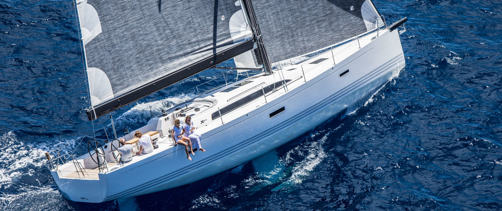

Racing to Heaven is a for-profit tax-free organization dedicated to fostering the sport of sailing through the message of the Lord. Our mission is to promote and administer international, national and regional sailing events in the Neuse River and the coastal waters of Eastern North Carolina, as well as provide educational opportunities for sailors of all skill levels.
The boat we are primarily sailing on is an X Yachts Xp 50 built in 2013. For our more serious races, we generally prefer to run a 7-8 person crew. As of now, we average between a 5-7 person crew meaing we are actively seeking new members.. We currently have an open position for a grinder, however, we will accept any skilled sailer who would like to become an integral member of our crew.
You may be a good fit for our crew if you share the following values
- Hard-working.
- Willingness to learn.
- Tolerable of others (this is particularly important when we are out at sea).
- Able to unwind and enjoy the ocean breeze after a tough day at sea.